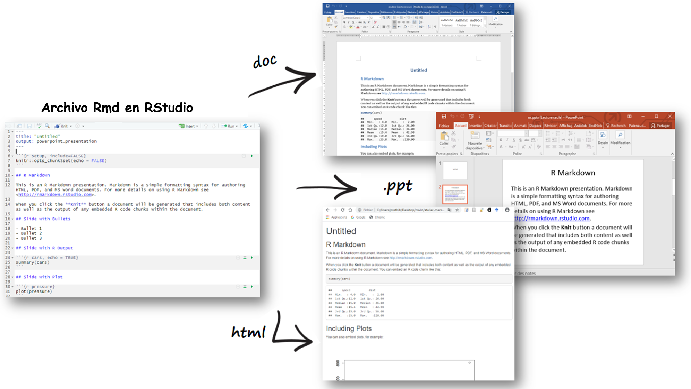
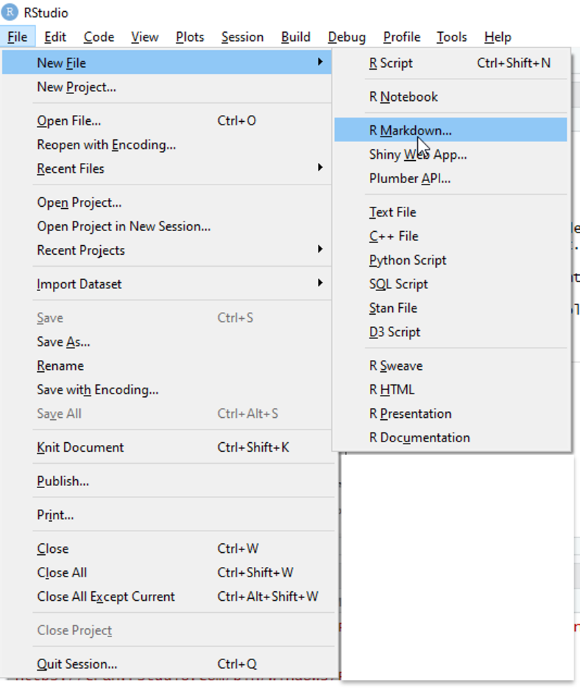
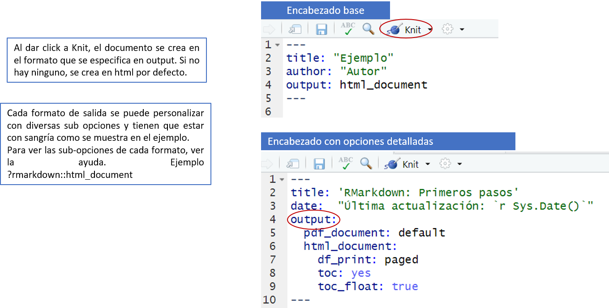
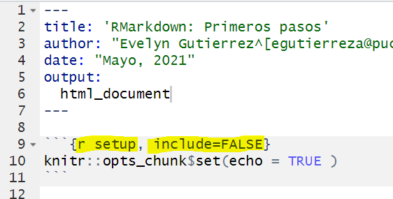

Taller de RMarkdown
Evelyn Gutierrez
1 Objetivos
Familiarizarse con el entorno de RStudio para crear reportes.
Comprender la estructura de un documento R Markdown.
Comprender los diferentes formatos y los ajustes básicos.
Aprender los fundamentos de la sintaxis de Markdown.
Aprender a estructurar un documento .rmd para compilarlo en diferentes formatos.
Aprender a compartir su documento online en RPubs.
2 Requerimientos
2.2 RStudio
- La interfaz básica de R no es muy intuitiva. Por esta razón no se usa mucho y se prefiere un IDE.

- Un IDE, Integrated Development Environment: un editor de scripts - es un entorno mucho más amigable que facilita el trabajo (gestión de archivos, objetos y comandos, historial de funciones, autocompletado,…)
- El IDE más utilizado es RStudio (pero hay otros como Tinn-R o jamovi).
- Los comandos y funciones son los mismos para R y RStudio.
2.3 Instalación
Descargar e instalar R básico - Elija su sistema operativo y siga los pasos.
Descargar e instalar RStudio (u otra interfaz) - Elija la versión gratuita y su sistema operativo.
Verificar si tienes los paquetes (package): rmarkdown y knitr en RStudio:
En la consola de R, utilizar lo siguiente:
find.package(c("rmarkdown","knitr"))## [1] "C:/Users/EvelynG/Documents/R/win-library/4.0/rmarkdown"
## [2] "C:/Users/EvelynG/Documents/R/win-library/4.0/knitr"Si no lo tiene, puedes instalarlos con los siguiente comandos.
En la consola de R, utilizar lo siguiente:
install.packages("rmarkdown")
install.packages("knitr")2.3.1 ¿Qué es un paquete o package?
Un paquete es un módulo (o extensión, biblioteca) que contiene un conjunto de funciones (a menudo relacionadas con un método o dominio particular)
En la instalación, R viene con un conjunto de funciones básicas {base} y módulos por defecto (built-in packages).
La comunidad desarrolla constantemente paquetes de funciones especializadas.
Hay más de 15.000 en el sitio web oficial de R CRAN. También se pueden encontrar otros en otros lugares (Github, por ejemplo).
Los paquetes deben ser descargados (
install.packages()o pueden ser instalados a través del menú superior de RStudio Tools>Install packages…). Solo es necesario instalarlos una vez; sin embargo, se deberán cargar (library()orequire()) cada sesión que se quieran utilizar.Una función (por ejemplo, correlación, tablas de contingencia…) puede encontrarse en varios paquetes con variantes más o menos importantes (procedimientos, opciones, argumentos, resultados).
Los paquetes también deben actualizarse periódicamente. Esto se puede realizar a través de: Tools>Check for package updates….
3 Fundamentos RMarkdown
3.1 Motivación - Ejemplos Rmd
Multiples opciones de publicaciones con RMarkdown:
- Esta página web.
- Repositorio de conocimientos Aibnb.
- Tareas académicas en Rpubs.
- Correos personalizados Mine Çetinkaya-Rundel.
- Encuesta sobre beneficios de salud para empleadores de 2017.
- Dashboards en eelloo.
3.2 ¿Qué es R Markdown ?
R + Markdown = RMarkdown
R Markdown es un paquete instalado por defecto en RStudio.
Es una herramienta creada para asegurar la reproducibilidad de un análisis o una investigación integrando en un único documento el texto en Markdown, el código (R u otro) y los resultados de su análisis.
Evita todos los pasos de copiar y pegar tablas, gráficos, imágees, y crea documentos o presentaciones fáciles de actualizar en diferentes formatos: word, pdf, ppt, html, etc.
Está optimizado para la creación de documentos html (formato que se beneficia de las opciones más interesantes).
3.3 Beneficios de usar RMarkdown
Los beneficios de usar RMarkdown:
- Simple y sencillo: Crear contenido web es rápido y cómodo.
- A prueba de errores: Difícil cometer errores de sintaxis.
- Minimalista: Es perfecto para usarlo con editores de texto minimalistas.
- Versátil: Permite desarrollar análisis de datos y redactar un informe a la vez.

3.4 ¿Cómo funciona?
R Markdown combina diferentes procesos para crear documentos en diferentes formatos a partir de un único archivo:

Todo comienza con la creación de un documento .Rmd en RStudio. Un archivo R Markdown es un simple archivo de texto con una extensión .Rmd (puede crearlo en el Bloc de notas).
Para generar un reporte, en RStudio utilice el botón knit que activa la función
rmarkdown::render()y ejecuta los bloques de código en el archivo .Rmd para incluirlos en el documento final. Estos resultados se convierten en un archivo temporal .md (que contiene el código y los resultados).Este es un bloque de código para compilar un documento y establecer el formato de salida con el argumento output_format de la función
render:
library(rmarkdown)
render("1-example.Rmd", output_format = "word_document") A continuación, este archivo .md es procesado por la herramienta Pandoc, que permite convertir el contenido de un lenguaje de marcas (markup) en diferentes formatos (“navaja suiza” de la conversión de formatos de documentos). Los parámetros de conversión se especifican en la cabecera YAML del documento .Rmd, donde entre otras cosas se especifica el formato final.
Si el formato final deseado es pdf, se añade un paso de procesamiento adicional: Pandoc transformará el archivo .md en otro archivo intermedio .tex. Este archivo .tex será luego procesado por LaTeX en su forma final de pdf.
¿Cómo creo un nuevo Rmd?
Creaci√≥n de un Rmd en RStudio üê£:

üë©‚Äçüíª ü뮂Äçüíª Ejercicio 1: Crear y compilar un Rmd
4 Formatos de salida
4.1 Formatos básicos
- Formatos de documentos:
- html_document
- odt_document
- rtf_document
- word_document
- github_document
- md_document
- pdf_document (LaTeX/pdf)
- latex_document (LaTeX/pdf)
- beamer_presentation (LaTeX/pdf)
- Formatos de presentación:
- ioslides_presentation (slides html)
- slidy_presentation (slides html)
- revealjs::revealjs_presentation (slides html + js)
- powerpoint_presentation
Opcional: Para crear archivos PDF utilizando RMarkdown, necesitaremos tener instalado una distribución de LaTeX. Si no tienes instalado LateX, recomendamos instalar TinyTeX.
En la consola de R, utilizar lo siguiente:
install.packages('tinytex')
tinytex::install_tinytex() # Instala TinyTeXTinyTex es una distribución ligera de LaTex. Sin embargo, esta instalación podría demorar según tu conexión a internet.
4.2 Otros formatos - Plantillas
Hay un gran número de paquetes y plantillas para crear diferentes tipos de documentos con una amplia variedad de estilos predefinidos: plantillas de presentación, artículos periodísticos, libros, tesis, sitios web, blogs, widgets, cuadros de mando, mapas y otras presentaciones interactivas…
Ver galeria
Algunos de los más conocidos:
Hay que tener en cuenta que el uso de estas diferentes herramientas requiere el aprendizaje de una configuración/etiquetado particular que puede ir en detrimento de la interoperabilidad de los formatos.
También puede crear sus propias plantillas y estilo de documento
üë©‚Äçüíª ü뮂Äçüíª Ejercicio 2: a√±adir un tema de prettydoc al Rmd.
5 Estructura de un documento RMarkdown
5.1 Partes
Contiene 3 partes:
- Un encabezado de metadatos (encabezado YAML): encabezado escrito en YAML rodeado por 3 guiones.
- Texto: formateado en markdown.
- Bloques de código: códigos encerrados entre triple tilde invertida (acentos agudos) ```` (Para crearlos rapidamente se puede usar ctrl +alt + i).


5.2 Metadatos
- Metadatos básicos y campos de Ouput para definir el formato y sus opciones para configurar la presentación final
- Sintaxis YAML

- Cada formato de salida tiene opciones específicas para personalizar la presentación final con argumentos como subvalores del campo output: (las subopciones deben estar con sangría).
- Para saber cuáles son estas opciones, consultar la ayuda:
?rmarkdown::html_document. - Si un formato de salida es proporcionado por un paquete en específico, debe ser nombrado en el campo YAML
output: tufte::tufte_html.
5.3 Editar metadatos
También es posible controlar el formato del documento final utilizando las opciones del menú knit de RStudio. El encabezado YAML se modificarán automáticamente.

6 Markdown
6.1 Conocer Markdown.
Markdown es un lenguaje de marcado, una versión simplificada de html, creado por John Gruber en 2004.
Se utiliza para estructurar contenidos textuales y producir documentos a partir de texto plano etiquetado.
Markdown refleja la filosofía del estoicismo: el “mundo natural” consiste en texto plano, y no hay que dejarse controlar por el deseo de placer (visual). — Yihui
A menudo se compara con LaTeX; otro lenguaje de marcado más potente pero mucho más complejo para producir documentos pdf.
Existen varias versiones de Markdown desarrolladas por diferentes programadores. La que utiliza R Markdown es la versión de Pandoc que también permite convertir los documentos en diferentes formatos.
Su gran sencillez lo convierte en una herramienta más limitada en cuanto a la estructuración de documentos que el html, LaTeX y los programas de tratamiento de textos. (Ver Gruber (Creador de ))
Por lo tanto, es útil conocer estos lenguajes (html, css, javascript, LaTeX) si quiere personalizar el formato de sus documentos (pero tenga cuidado porque el uso de html y LaTeX puede causar problemas al exportar a ciertos formatos).

6.3 Formatear texto.
6.3.1 Negrita y Cursiva
Podemos utilizar algunos símbolos alrededor de nuestro texto para resaltarlo con negrita o cursiva:
Poner * entre el texto cambiará el estilo del texto a cursiva mientras que ** cambiará nuestro texto a negritas:
| En Rmd: | Resultado |
|---|---|
*Cursiva* |
Cursiva |
**Negrita** |
Negrita |
6.3.2 Otros elementos:
Algunas otras opciones de personalización de texto incluyen los siguientes elementos:
| Elemento | En Rmd: | Resultado |
|---|---|---|
| Subindice | H~2~O |
H2O |
| Superindice | E=mc^2^ |
E=mc2 |
| Elem. | En Rmd: | Resultado |
|---|---|---|
| URL | [FIEECS](https://fieecs.uni.edu.pe/) |
FIEECS |
| Imagen |  |
6.4 Diferentes niveles de texto.
6.4.1 Secciones
Para crear titulos, utilizamos # al inicio del texto:
# Encabezado de primer nivel {-}
## Encabezado de segundo nivel
### Encabezado de tercer nivel
6.4.2 Crear listas
Utilizando el siguiente código:
1. Primer item
2. Segundo item
3. Tercer item
- un item sin numeración
- otro item sin numeración
Obtenemos lo siguiente:
- Primer item.
- Segundo item.
- Tercer item.
- un item sin numeración.
- otro item sin numeración.
6.5 Expresiones matemáticas
Para comenzar a utilizar la sintaxis de LaTeX dentro de un Rmd, utilizamos $ y $$. Si deseamos escribir expresiones dentro de una línea de texto, usamos $, y para expresiones matemáticas en un nuevo párrafo usamos $$
Ejemplos:
Al utilizar el siguiente código (copiar y pegar el código en un Rmd).$$f(k) = {n \choose k} p^{k} (1-p)^{n-k}$$
Se obtendrá el siguiente resultado:
\[f(k) = {n \choose k} p^{k} (1-p)^{n-k}\]
Más sobre expresiones matemáticas en la guía oficial
üë©‚Äçüíª ü뮂Äçüíª Ejercicio: Crear un modelo de reporte con las secciones que debes tener para un análisis exploratorio. Por ejemplo: Lectura de datos, Análisis exploratorio univariado, y análisis exploratorio multivariado. Puedes ser creativo con los nombres. Además, a√±adir los siguientes elementos:
- Negritas y cursivas.
- Añadir logo.
- Añadir imagen de RStudio.
Ejemplo de Rmd con sintaxis markdown
7 Códigos de R (Chunks)
El código R puede incluirse de dos maneras:
- En bloques de código (chunks): inician con ```{r} (donde r indique el lenguaje a utilizar, y se puede poner otros como: python, sql, …)
```{r}
mean(23, 65, 43, 34, 56) # El estilo de los bloques se define mediante la opción "highlight" en el YAML
```- Las etiquetas de bloque se pueden añadir con el botón insert o con Ctrl + Alt + i.
- Lo mejor es dividir el código que genera diferentes salidas en diferentes bloques
- En el texto (Inline R code) que comienza con
ry termina con un acento``.
Código:
La edad media de nuestros participantes es `r mean(23, 65, 21, 22, 26)`Resultados:
La edad media de nuestros participantes es 23.
7.1 Ejemplo: diamantes
Texto Markdown
---
title: "Diamantes"
date: 2021-08-21 #o usar Sys.Date()
output: html_document
---
```{r setup, include = FALSE}
library(ggplot2)
library(dplyr)
smaller <- diamonds %>%
filter(carat <= 2.5)
```
Tenemos `r nrow(diamonds)` diamantes. Solo
`r nrow(diamonds) - nrow(smaller)` pesan más de
<span style="color:red"> 2.5 quilates </span>. La distribución del resto es la siguiente:
```{r, echo = FALSE}
smaller %>%
ggplot(aes(carat)) +
geom_freqpoly(binwidth = 0.1)
```
Output
7.2 Configuración de chunks.
El “comportamiento” de los bloques de código y la presentación de los resultados pueden configurarse de varias maneras.
Knitr ofrece muchas opciones (chunck options) que pueden añadirse como argumentos entre las llaves de cada bloque (cada opción debe estar separada por una coma).
```{r, chunk-label, results='hide', fig.height=4}
```Cada bloque puede tener opcionalmente un nombre (etiqueta), debe ser la primera opción.
Estas opciones controlan esencialmente cómo se compila (o no) el código de cada bloque y cómo se presentan (o no) los resultados de cada bloque de código.
Muchos de los argumentos tienen valores lógicos: TRUE O FALSE (con un valor por defecto que debe ser cambiado si no es apropiado)
Opciones globales: Es posible establecer los valores de los argumentos para todos los bloques desde el principio incluyendo el siguiente bloque al principio del documento (por defecto cuando se crea un nuevo archivo .Rmd):

7.3 Configuración de chunks

7.4 Otros detalles:
Es mejor añadir una línea en blanco entre diferentes elementos, como un título y un párrafo.
Para hacer un salto de línea: termine la línea con dos espacios + Enter.
Para añadir espacios adicionales entre líneas/secciones, utilice la etiqueta html:
<br>.Para incluir comentarios que no saldrán en el documento final, utilice comentarios en html:
<!-- Esto es un comentario -->.
7.4.1 Ejercicio.
- Crear un reporte de exploración y análisis de datos a partir de Rmarkdown. El reporte puede estar en html, pdf o word.
- Utilizar negritas y cursivas para resaltar los resultados del análisis.
- Utilizar secciones para dividir el análisis de los datos. Ejemplo: sección lectura de datos, sección de exploración y sección de regresión.
- Utilizar expresiones matemáticas en Rmd para mostrar la formula de un estadístico que vaya a utilizar en el análisis.
- Utilizar chunks con códigos de R.
Ejemplo:
- Reporte en pdf realizado por Vilma Romero (RLadies Lima). El códido fuente está disponible en github.
- Datos del censo
8 Más sobre Rmarkdown:
Siguiente sesión:
8.1 Más recursos
Yihui Xie, J. J. Allaire, Garrett Grolemund, 2020-10-14, R Markdown: The Definitive Guide
Yihui Xie, Christophe Dervieux, Emily Riederer, 2020-09-21, R Markdown Cookbook
Yihui Xie, knitr. Elegant, flexible, and fast dynamic report generation with R
RStudio, RMarkdown Gallery
Karl Broman, Writing reproducible reports. knitr with R Markdown
Michael Clark, 2019-11-06, Introduction to R Markdown
Yan Holtz, 10 December 2018, Pimp my RMD: a few tips for R Markdown
Alison Hill · Desirée De Leon, Sharing on Short Notice. HOW TO GET YOUR TEACHING MATERIALS ONLINE WITH R MARKDOWN
Writing publications with R, Wed, Aug 17, 2016
Mike Frank & Chris Hartgerink, 2017-07-31, RMarkdown for writing reproducible scientific papers
Marian L. Schmidt, May 11th, 2016, Creating Dynamic Documents with RMarkdown and Knitr
Thea Knowles, January 14, 2020, RMarkdown and Bookdown for Academic Writing in R